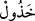
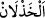

“Şeytan” yâni saptırıcı kimselerin dostluğuna, Rasûlullah (s.a.)’e muhâlefete ve
Kur’ân’ı terk etmeye sevkeden İblis, kendisine itâat eden “insanı (uçuruma sürükleyip
sonra) yüzüstü bırakıp rezil rüsvay eder.”
“, terk etmesi çok olan demektir. Şeytan bir kimseyi helâke sürükleyinceye kadar
dost edinir. Sonra onu terk eder ve hiç bir yardımda bulunmaz. Kendisine sâdık olan
kimselerin durumu da böyledir. “, yardım edeceği zannedilen kimsenin yardımı
terk etmesidir. Şeytanın yüzüstü bırakmakla vasfedilmesinde onun âhirette fayda
vereceğine dâir dünyada vaadde bulunup istek uyandırdığına işâret vardır.
Bu cümle, kendisinden önceki açıklamalara dâir ya Allah Teâlâ tarafından ya da zâlim
kimsenin sözünün devamı olarak bir ara cümledir.
Bu âyet, Allah’a isyan etme husûsunda bir araya gelmiş birbirini seven bütün
topluluklar hakkında genel bir açıklamadır. Gerçek dostluk herhangi bir istek veya korku
için değil, dinde olan dostluktur. Bu sebeple “Allah yolunda kardeşler olun.”[208] Yâni
Rahmân’ın yolunda kardeşler olun, şeytanın yolunda değil, buyurulmuştur. Başka bir
hadiste “Kişi dostunun dini üzeredir. Binaenaleyh herbiriniz kimi dost edindiğine
dikkat etsin.”[209] buyurulmuştur. Yine Rasûlullah (s.a.) “Mü’minden başkasıyla dost
olma. Yiyeceğini de ancak müttakî yesin.”[210] buyurmuştur.
Mâlik b. Dînar: “İyi kimselerle taş taşımak günahkârlarla hurma tatlısı yemekten daha
hayırlıdır” demiştir.
Bazı kimseler bu âyetteki “şeytan” ile kötü dost ve arkadaşların kasdedildiğini
söylemişlerdir. Bu kimselerin ‘şeytan’ diye isimlendirilmesi ise kendileri yoldan çıkmış
ve başkalarını da yoldan çıkaran kimseler olmalarındandır. Kimde Allah’ı taleb yoksa o
şeytandır. Hayvanlar gibi hatta daha da sapmıştır. Çünkü hayvanlar başkalarını hak
yoldan saptırmazlar. Şeytânî olan ise hem sapmış hem de saptırıcıdır. Ebû Bekir
Muhammed b. Abdillah Hâmidî (r.h.) der ki:
İnsanların hayırlılarıyla arkadaşlık et, onlarla karşılaştığında
Arkadaşların en hayırlısı iffetli olandır
İnsanlar dirhemler gibidir, onları ayırdım
Onların içinde gümüş de kalp para da gördüm.
Rasûlullah (s.a.): “Sâlih arkadaş güzel koku satan attâr gibidir. Onun güzel
kokusundan almasan da onun kokusu sana siner. Kötü arkadaş ise demirci gibidir.
Ateşiyle seni yakmasa da kötü kokusu sana bulaşır.”[211]
Bir grup insan Mekke’ye geldiler. Mekkelilere “Sizin beldenize geldik. İki günde
hayırlılarınızı da şerlilerinizi de birbirinden ayırıp tanıdık.” dediler. Onlara “Bu nasıl
oldu?” diye sorulunca: “Bizim hayırlılarımız sizin hayırlılarınıza, şerlilerimiz de
şerlilerinize karıştı. Herkes kendine benzeyenle yakınlık kurdu.” dediler.
Hırsızlardan bir grup yakalandı. İçlerinden biri: “Ben onlara şarkı söylerdim, ben